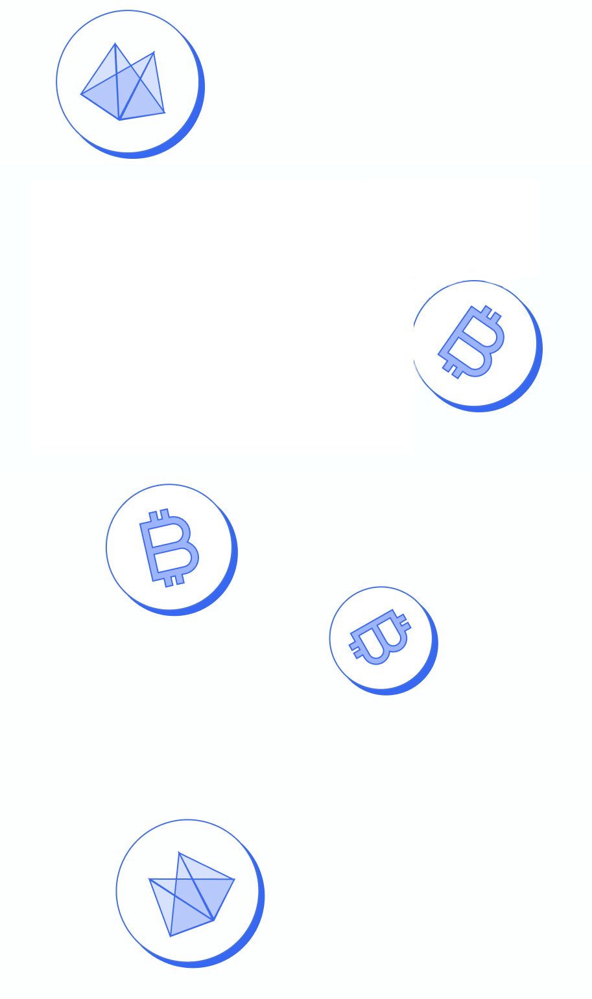
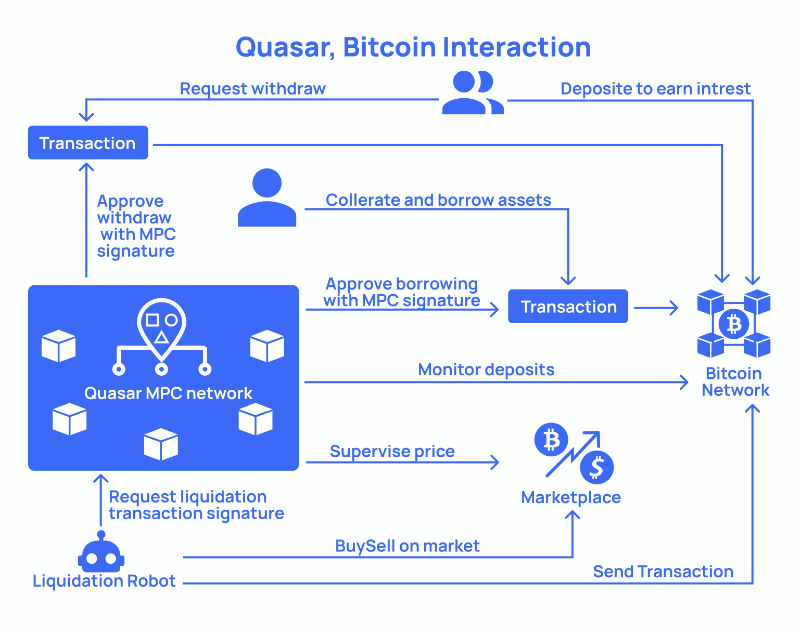
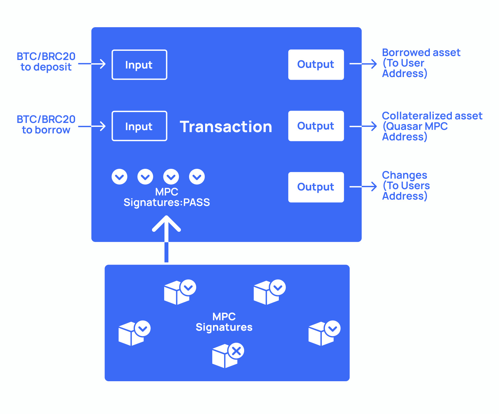

What is
Quas?
Quas?
Quas is a lending product for inscription assets built on the Bitcoin network launched by Quas Lab.
In Quas, you can earn interest and borrow money. It is like AAVE on Ethereum.
Quas lab is composed of people who like coding, financial engineering, or having fun with algorithms.
In order to build a native Bitcoin lending products, we have to build ORACLE and MPC. Although the R&D cost of doing this is higher, but it is safer, more stable, and contributes more to the Bitcoin ecosystem.
How Quas
works?
works?
1.Solution Framework
Assets are on Bitcoin, businesses are on MPC supervising transactions, prices, and making deals on Bitcoin.

2.Solution Workflow
User composes a transaction with assets to deposit, borrow as inputs, user and Quas MPC addresses as outputs. MPC nodes sign or reject this transaction according to bitcoin and market. Transaction will be executed when most of MPC nodes sign this transaction.

3.Solution MPC
MPC nodes stake bitcoins to join network. They supervise prices, reach consensus on protocol params, sign transactions and earn fees from protocol. Datas like liquidation point, margin maintenance are calculated by MPC nodes.